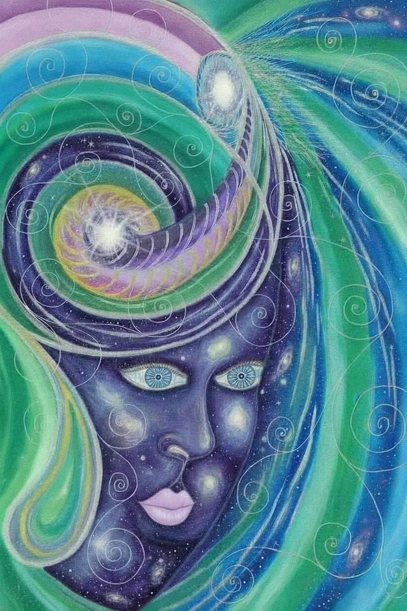
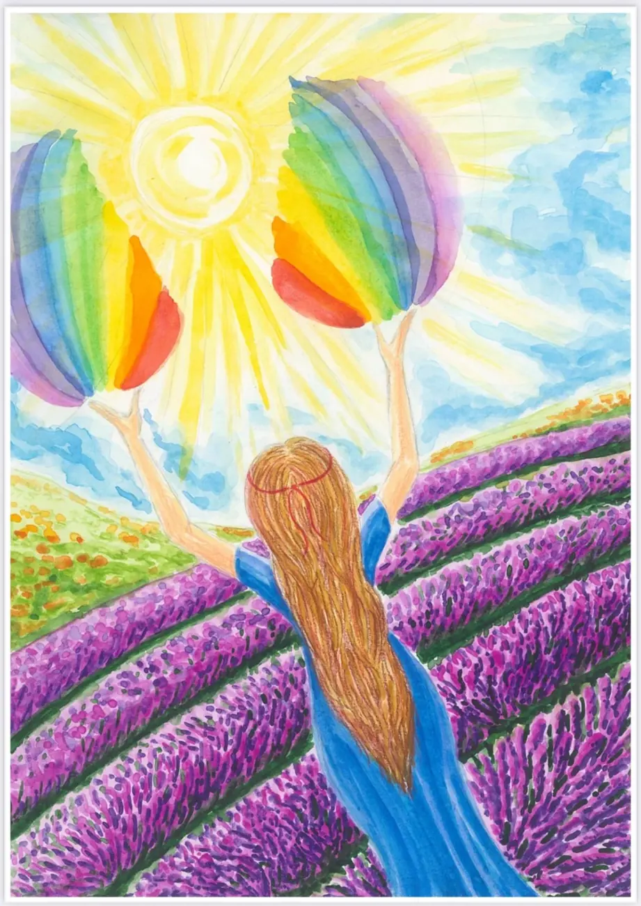

Остановитесь
Выберите спокойное место. Сформулируйте открытый вопрос: «Что мне сейчас нужно?»
Иногда, чтобы услышать себя,
достаточно посмотреть на мир иначе.
Одна карта. Новый взгляд. Ваш ценный шаг.


«Ценный шаг» — авторские метафорические ассоциативные карты Наталии. В каждой акварели живут цвет, движение и история, с которой можно встретиться по-своему.
Один увидит в образе одиночество, другой — долгожданный покой. Здесь нет единственной правильной трактовки: важны ваши ассоциации, чувства и вопросы.
Рассмотрите детали, переверните карту,
найдите образ, который откликается.
Нажмите на карту для полного просмотра ↗
Сделайте вдох. Подумайте о том, что сейчас важно.
Выберите одну из трёх карт — без спешки.
Выберите спокойное место. Сформулируйте открытый вопрос: «Что мне сейчас нужно?»
Что первым привлекло внимание? Цвет, персонаж, движение? Какие чувства появились?
Свяжите образ со своей ситуацией. Какое маленькое действие вы готовы сделать сегодня?
Карты — творческий инструмент для саморефлексии. Они не предсказывают будущее и не заменяют психологическую или медицинскую помощь.
Если эти образы вам близки, познакомьтесь с колодой
или продолжите исследование в авторских видео.